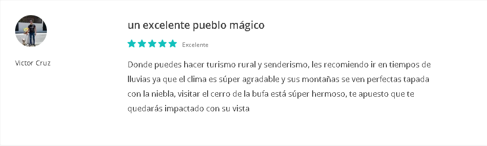

Pagina principal
Conoce la historia de este poblado
Atracciones turísticas
Opiniones de otros visitantes
Curiosidades de San Sebastian del Oeste
Contactanos
Conoce las opiniones de otros visitantes
